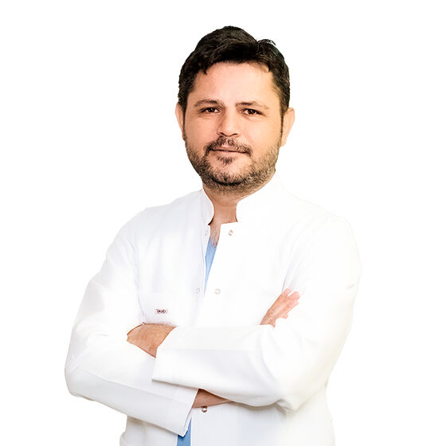

Орел Талип
Специализируется на витрэктомии, хирургическом лечении косоглазия, патологиях сетчатки и макулы. Проводит операции при отслойке сетчатки, разрыве макулы и другие сложные витреоретинальные вмешательства.
Записаться к врачуБолее 20 лет опыта, провёл более 15 000 операций. Работал в клиниках Стамбула и других городов Турции. Ведёт приём и оперирует в AsiaKoz Алматы по предварительной записи.
Какие операции выполняет
Витрэктомия, отслойка сетчатки, разрыв макулы, диабетическая ретинопатия, возрастная макулодистрофия, сосудистые окклюзии.
Хирургия косоглазия у взрослых и детей. Операции на глазодвигательных мышцах, лечение амблиопии.
Удаление катаракты, имплантация интраокулярных и «умных» линз.
Лазерная коррекция (эксимер-лазер), хирургия глаукомы, операции на веках, птеригиум.
Образование и сертификаты
- Медицинский факультет университета Dokuz Eylül (Турция), 2004.
- Специализация по офтальмологии — Dokuz Eylül Üniversitesi, 2009.
- FEBO (European Board of Ophthalmology), 2016.
- FICO (International Council of Ophthalmology), 2017.
- Работал в клиниках Стамбула, Измира, Аданы, Аксарая. Ведёт приём в AsiaKoz (Алматы).
Направления
Записаться на приём к Орел Талип
Напишите в WhatsApp — подберём дату консультации или операции.
Записаться в WhatsApp